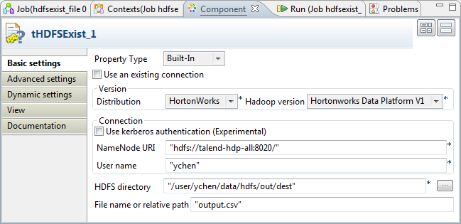
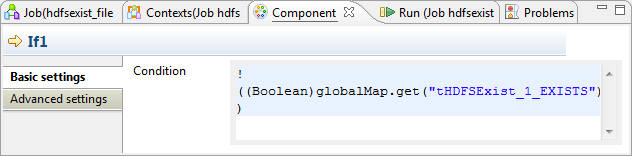

Avertissement
Ce composant est disponible dans la Palette du Studio si vous avez souscrit à l'édition correspondante de Talend Big Data Studio.
|
Famille de composant |
Big Data/File | |
|
Fonction |
Le composant tHDFSExist vérifie l'existence d'un fichier dans un répertoire donné dans HDFS. | |
|
Objectif |
Ce composant permet de vous assure de l'existence d'un fichier spécifique dans HDFS. | |
|
Basic settings |
Use an existing connection |
Cochez cette case et sélectionnez le composant de connexion adéquat à partir de la liste Component list pour réutiliser les paramètres d’une connexion que vous avez déjà définie. |
|
Version |
Distribution |
Sélectionnez dans la liste déroulante le produit que vous utilisez comme distribution d'Hadoop. Les options de la liste varient selon le composant que vous utilisez. |
|
Hadoop version |
Sélectionnez la version de la distribution d'Hadoop que vous utilisez. | |
|
Connection |
NameNode URI |
Saisissez l'URI du NameNode Hadoop. |
|
|
User name |
Nom d'utilisateur de HDFS. |
|
Group |
Identifiant de l’utilisateur et nom du groupe sous lesquels les instances HDFS ont été lancées. Ce champ peut être disponible ou indisponible selon la distribution que vous utilisez. | |
|
|
Use kerberos authentication |
Si vous accédez au cluster Hadoop fonctionnant avec la sécurité de Kerberos, cochez cette case, puis saisissez le "principal name" de Kerberos pour le NameNode dans le champ affiché. Cela vous permet d'utiliser votre identifiant pour vous authentifier, en le comparant aux identifiants stockés dans Kerberos. Cette case est disponible ou indisponible selon la distribution d'Hadoop à laquelle vous vous connectez. |
|
HDFS directory |
Parcourez votre système ou saisissez le chemin d'accès au répertoire de HDFS dans lequel sont stockées les données à utiliser. | |
|
|
File name or relative path |
Saisissez le nom du fichier dont vous souhaitez vérifier l'existence. Si nécessaire, parcourez votre système jusqu'au fichier ou saisissez le chemin d'accès relatif au répertoire défini dans le champ HDFS directory. |
| Advanced settings |
Hadoop properties |
Si vous devez utiliser la configuration personnalisée pour votre Hadoop, renseignez dans cette table la ou les propriété(s) à personnaliser. Lors de l'exécution, la ou les propriété(s) personnalisée(s) vont écraser celles définies précédemment pour Hadoop. Pour plus d'informations concernant les propriétés requises par Hadoop, consultez la documentation Hadoop. |
|
tStatCatcher Statistics |
Cochez cette case pour collecter les données de log au niveau du composant. | |
|
Dynamic settings |
Cliquez sur le bouton [+] pour ajouter une ligne à la table. Dans le champ Code, saisissez une variable de contexte afin de sélectionner dynamiquement votre connexion HDFS parmi celles prévues dans votre Job. Cette fonctionnalité est utile si vous devez accéder à des fichiers dans différents systèmes HDFS ou dans différentes distributions, en particulier lorsque vous travaillez dans un environnement dans lequel vous ne pouvez pas changer les paramètres de votre Job, par exemple lorsque votre Job doit être déployé et exécuté dans un Studio Talend indépendant. La table Dynamic settings n'est disponible que si la case Use an existing connection est cochée dans la vue Basic settings. Lorsqu'un paramètre dynamique est configuré, la liste Component List devient inaccessible dans la vue Basic settings. Pour plus d'informations concernant les Dynamic settings et les variables de contexte, consultez le Guide utilisateur Talend Data Integration Studio. | |
|
Utilisation |
Le tHDFSExist peut être utilisé en standalone. | |
|
Prérequis |
La distribution Hadoop doit être correctement installée afin de garantir les interactions avec le studio. Par exemple, si vous devez vous connecter à MapR à partir du studio, assurez-vous d'avoir
installé le client MapR sur la même machine que le studio et d'avoir ajouté la bibliothèque
client de MapR dans la variable PATH de cette machine. Pour Windows, la bibliothèque est
lib\MapRClient.dll dans le fichier Jar du client MapR
; si vous ne l'ajoutez pas, il est possible que vous rencontriez l'erreur suivante :
Pour plus d'informations concernant l'installation d'une distribution Hadoop, consultez le manuel correspondant à la distribution Hadoop que vous utilisez. | |
|
Limitation |
La version 1.6+ de JRE est requise pour exécuter le composant. | |
Dans ce scénario, un Job à deux composants vérifie si un fichier spécifique existe dans HDFS et retourne un message pour indiquer le résultat de la vérification.
Dans un cas d'utilisation réelle, vous pouvez ensuite traiter le fichier en question selon le résultat de la vérification, à l'aide d'autres composants HDFS fournis avec le Studio.
Lancez la distribution d'Hadoop dans laquelle se trouve le fichier dont vous souhaitez vérifier l'existence.
Dans la perspective Integration du Studio, créez un Job vide, nommé hdfsexist_file, par exemple, à partir du nœud Job Designs de la vue Repository.
Pour plus d'informations concernant la création d'un Job, consultez le Guide utilisateur de votre Studio d'intégration.
Déposez un tHDFSExist et un tMsgBox dans l'espace de modélisation graphique.
Connectez-les à l'aide d'un lien Trigger > Run if.
Double-cliquez sur le composant tHDFSExist pour ouvrir sa vue Component.
Dans la zone Version, sélectionnez la distribution d'Hadoop à laquelle vous vous connectez ainsi que sa version.
Dans la zone Connection, saisissez les valeurs des paramètres nécessaires à la connexion à HDFS.
Dans un cas d'utilisation réelle, vous pouvez utiliser un tHDFSConnection pour créer une connexion et la réutiliser. Pour plus d'informations, consultez la section intitulée « tHDFSConnection ».
Dans le champ HDFS Directory, parcourez votre système, ou saisissez le chemin d'accès au dossier dans lequel se trouve le fichier dont vous souhaitez vérifier l'existence. Dans cet exemple, le dossier est le suivant : /user/ychen/data/hdfs/out/dest.
Dans le champ File name or relative path, saisissez le nom du fichier dont vous souhaitez vérifier l'existence. Par exemple, output.csv.
Double-cliquez sur le tMsgBox pour ouvrir sa vue Component.

Dans le champ Title, saisissez le titre à utiliser dans la fenêtre de message en cours de création.
Dans la liste Buttons, sélectionnez OK pour choisir le bouton affiché dans la fenêtre de message.
Dans la liste Icon, sélectionnez Icon information.
Dans le champ Message, saisissez le message que vous souhaitez afficher une fois la vérification effectuée. Dans cet exemple, saisissez "This file does not exist!".
Cliquez sur le lien If pour ouvrir sa vue Basic settings, dans laquelle vous pouvez configurer la condition pour vérifier l'existence du fichier.
Dans le champ Condition, appuyez sur les touches Ctrl+Espace pour accéder à la liste des variables et sélectionnez la variable globale EXISTS. Saisissez un point d'exclamation avant la variable afin de mettre la variable à la forme négative.
Appuyez sur F6 pour exécuter le Job.
Une fois exécuté, une fenêtre de message s'ouvre et indique que le fichier nommé output.csv n'existe pas dans le répertoire défini précédemment.

Dans la distribution de HDFS dans laquelle vous avez vérifié l'existence du fichier, parcourez votre système jusqu'au répertoire spécifié. Vous pouvez constater que le fichier n’existe pas.